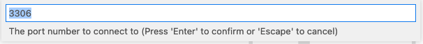
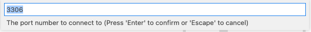
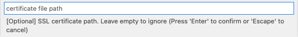
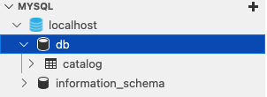

Containerized Databases
10 MINUTE EXERCISE
Every developer sometimes needs to run databases locally or in multiple environments. Containers provide a great way to reduce the complexity and resources required to achieve this. In production, containers also provide a good candidate to run databases for microservices patterns and these days more and more traditional enterprise databases are using container based methods of deployment.
In this section we will demonstrate a simple task of running a MYSQL database in a container, creating and inserting data into the database and finally how you can still manage to simply interact with the database through your typical database UI tools.
Run the Database Container
-
Start your database by running the following commands (ensure you are running as the root user in new terminals with sudo -i):
sudo -ipodman run \ --rm \(1) --name mysql_database \(2) -e MYSQL_USER=user -e MYSQL_PASSWORD=pass -e MYSQL_DATABASE=db \(3) -p 3306:3306 \ quay.io/bfarr/mysql-801 This means the container should be removed once stopped 2 Instead of referring to the container by its Container IDwe can provide a name by which we’d like to address the container3 These are environment variables that we would like to be made available within the container. In this instance, these are all environment variables that MySQL uses to set itself up -
The terminal should be taken over with log output from the container. This is because we did not run the container in "daemon mode" and instead it is running in the foreground of our terminal.
-
Open a second terminal to the side by hitting the terminal split button
 Figure 1. Terminal split button
Figure 1. Terminal split button -
Observe the running container image by running the
podman pscommandpodman psCONTAINER ID IMAGE COMMAND CREATED STATUS PORTS NAMES e658d0e1d5c1 quay.io/bfarr/mysql-80:latest run-mysqld --defa... 13 minutes ago Up 13 minutes ago 0.0.0.0:3306->3306/tcp mysql_database (1)1 Notice that this is the name we assigned the container above
Create the Database
-
Lets view the sql file which we will run against our database. Use the command below or alternatively you can open via the code server menu. You will notice it creates a table and inserts some rows into the table.
/usr/lib/code-server/bin/code-server -r /home/%USER%/container-workshop/sql/example_database.sql -
Now lets run this sql against our database providing via the mysql cli that is running in the container. To do this we will use the
podman execcommandcat /home/%USER%/container-workshop/sql/example_database.sql | \(1) podman exec \(2) -i \(3) mysql_database \(4) mysql -u user -p'pass' -D db (5)1 output the contents of the .sql file that creates the example database to STDIN 2 Run a command in a (running) container 3 interactive: makes STDIN available to whatever command we are exec’ing 4 The name (or Container ID) of the running container where we want to run the command5 The command that we mean to run
Run a Query
Your VS Code server IDE has a MYSQL extension installed that we will use to run a query. We will use this to run a simole select statement to demonstrate that the database UI tools that are traditionally used can continue to be used with containerised databases. Though we are simply here using local url and port settings, when containers run in a container platform such as OpenShift there are cli tools that help to tunnel the port to your local desktop or ports can be exposed outside the cluster.
-
Find the MYSQL extension at the bottom left of the Code Server and click the + symbol to create a new connection

-
Input the host and user values as it prompts you to do so:


-
Type pass as we have set in the parameters in running the container.
 
 -
Press enter with no value.
 -
If successful you should see a new connection with localhost that you can expand and start to inspect databases.
 -
Next right click on the localhost icon and select "New Query"

-
Cut and paste "select * from db.catalog;" into the window, right click and select "Run MySQL Query".
select * from db.catalog;
-
If successful you will now see the results of your query.

Considerations for Database Containerisation
This simple exercise was designed to introduce working with database in containers. Today containers are provided for many databases including: PostgreSQL, MySQL, MariaDB, MongoDB, SQL Server. See Database Containers
In kubernetes environments, operators are being provided by organisations to ease the burden in managing the full lifecycle.
An example of container based deployment is Microsoft’s SQL Server Big Data Clusters
SQL Server Big Data Clusters (BDC) is a new capability brought to market as part of the SQL Server 2019 release. BDC extends SQL Server’s analytical capabilities beyond in-database processing of transactional and analytical workloads by uniting the SQL engine with Apache Spark and Apache Hadoop to create a single, secure and unified data platform. BDC is available exclusively to run on Linux containers, orchestrated by Kubernetes, and can be deployed in multiple-cloud providers or on-premises.